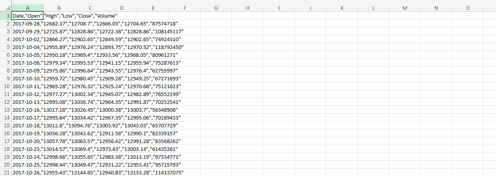
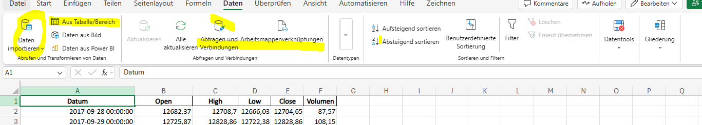
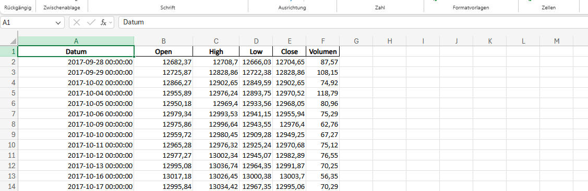

Excel-Automatisierung mit Python
In vielen Teams entstehen wiederkehrende Excel-Aufgaben: Dateien werden manuell geöffnet, Daten bereinigt, Kennzahlen nachgetragen und Ergebnisse in neue Tabellen kopiert. Das kostet Zeit und erhöht das Risiko für Übertragungsfehler.
Diese Arbeitsprobe zeigt, wie ein solcher Ablauf analysiert, strukturiert und mit Python teilweise automatisiert werden kann. Der Fokus liegt nicht auf kompliziertem Code, sondern auf einer praxistauglichen und nachvollziehbaren Lösung.
1. Ausgangslage & Ziel
Viele manuelle Schritte
Excel-Dateien werden geöffnet, geprüft, bereinigt und anschließend für Berichte oder Übersichten weiterverarbeitet.
Fehleranfälligkeit
Manuelle Übertragungen, uneinheitliche Spaltennamen und fehlende Werte erhöhen den Aufwand und erschweren die Nachvollziehbarkeit.
Strukturierte Verarbeitung
Daten sollen eingelesen, vereinheitlicht, geprüft, berechnet und als übersichtliches Ergebnis wieder ausgegeben werden.
2. Typischer Ablauf vor der Automatisierung
- Excel-Datei öffnen und mehrere Tabellenblätter prüfen.
- Leere oder fehlerhafte Werte manuell korrigieren.
- Spalten umbenennen oder vereinheitlichen.
- Summen, Durchschnittswerte oder Statusfelder berechnen.
- Ergebnisse in eine neue Datei oder Übersicht übertragen.
3. Beispielhafte Visualisierung
Die folgenden Abbildungen zeigen beispielhaft den Ausgangszustand, einen strukturierten Zwischenschritt und das bereinigte Ergebnis nach der Aufbereitung.

Rohdaten nach dem Import
Die CSV-Datei liegt zunächst unstrukturiert vor und muss für die weitere Auswertung aufbereitet werden.

Strukturierung in Excel
Die Daten werden geprüft, geordnet und für die weitere Verarbeitung vorbereitet.

Bereinigte Tabelle
Die Daten liegen in einer einheitlichen Struktur vor und können für Analyse, Berichte und Visualisierung genutzt werden.
4. Beispiel für eine Lösung mit Python
Mit Pandas lässt sich ein solcher Ablauf deutlich vereinfachen. Die Daten werden strukturiert eingelesen, geprüft und in wenigen Schritten ausgewertet.
Das Beispiel liest eine Excel-Datei ein, vereinheitlicht Spaltennamen, ergänzt fehlende Statuswerte, berechnet einfache Kennzahlen und exportiert das Ergebnis in eine neue Auswertungsdatei.
import pandas as pd
# Excel-Datei einlesen
df = pd.read_excel("projektstatus.xlsx")
# Spalten vereinheitlichen:
# - Leerzeichen am Anfang/Ende entfernen
# - alles klein schreiben
# - Leerzeichen innerhalb des Spaltennamens durch Unterstriche ersetzen
df.columns = [
c.strip().lower().replace(" ", "_")
for c in df.columns
]
# Fehlende Werte behandeln
df["status"] = df["status"].fillna("offen")
df["aufwand_stunden"] = pd.to_numeric(df["aufwand_stunden"], errors="coerce")
# Kennzahlen berechnen
offene_tickets = (df["status"] == "offen").sum()
gesamtaufwand = df["aufwand_stunden"].sum()
# Ergebnis exportieren
summary = pd.DataFrame({
"Kennzahl": ["Offene Tickets", "Gesamtaufwand"],
"Wert": [offene_tickets, gesamtaufwand]
summary.to_excel("auswertung.xlsx", index=False)5. Nutzen
Weniger manuelle Eingriffe
Wiederkehrende Arbeitsschritte können schneller und einheitlicher durchgeführt werden.
Weniger Fehler
Standardisierte Verarbeitung reduziert Übertragungsfehler und uneinheitliche Ergebnisse.
Klare Schritte
Der Ablauf ist dokumentiert und kann bei Bedarf wiederholt oder angepasst werden.
Regelmäßige Aufgaben
Ähnliche Dateien oder Auswertungen können mit gleichem Muster erneut verarbeitet werden.
6. Was dieses Beispiel zeigt
Dieses Beispiel zeigt nicht nur ein kleines Python-Skript, sondern vor allem eine Arbeitsweise: einen Prozess verstehen, unnötige Schritte erkennen und ihn so strukturieren, dass er für andere nachvollziehbar und wiederverwendbar wird.
Technisch und fachlich denken
- Tabellenstrukturen schneller erfassen und vereinheitlichen.
- Datenbereinigung systematischer angehen.
- Fachliche Anforderungen in kleine Verarbeitungsschritte übersetzen.
- Technische Ergebnisse verständlich dokumentieren.
Mögliche nächste Schritte
- Visualisierung mit Diagrammen.
- Automatische Berichte für mehrere Dateien.
- Filter für Fachbereiche, Status oder Prioritäten.
- Export in Excel und PDF für Projektübersichten.
7. Fazit
Die Arbeitsprobe verbindet Prozessanalyse, Datenaufbereitung, Automatisierung und technische Dokumentation. Genau diese Kombination ist in IT-nahen Rollen hilfreich, wenn wiederkehrende Abläufe verständlich, stabil und nachvollziehbar verbessert werden sollen.